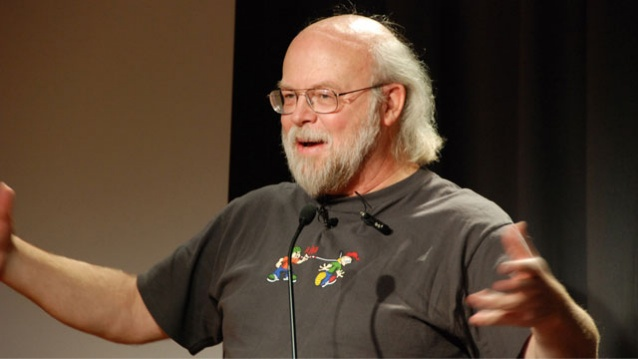

Top 10 world best programmers List
- James Gosling (Java Creator)
- Richard Stallman (GNU Project Creator)
- Bjarne Stroustrup (C++ Creator)
- Tim Beners-Lee (HTML and WWW inventor)
- Dennis Ritchie (C Programming language creator)
- Jack Dorsey (Twitter Creator)
- Drew Houston (Dropbox Creator)
- Mark Zuckerberg (FB Creator)
- Larry Wall (Perl language)
- Yukihiro Matsumoto (Ruby interpreter)
James Gosling (Java Creator)

James Gosling on Apple, Apache, Android & the Future of JAVA. He is a Canadian computer scientist and also known as the father of the Java programming language. He spends his lot of time for the development of the Java Programming Language. He created the main frame for Java and implemented the language’s original compiler and virtual machine.
Bjarne Stroustrup( c++ creator)

In Bell Lab, he designed and implemented C++. Based on C and inspired by Simula, provides a set of general and flexible abstraction mechanisms that can be mapped directly and efficiently onto computer hardware. The open, flexible research atmosphere encouraged him to consider adapting concepts from Simula, which he had used in his Ph.D. thesis work, to C. He is quoted as saying: “When I joined, I was basically told to do‘something interesting
TIM BENERS-LEE (HTML AND WWW INVENTOR)
Sir Tim Berners-Lee is a British computer scientist. He had written the 3 fundamental technologies that remain the foundation of today’s Web (and which you may have seen appear on parts of your Web browser): i.e. HTML, URL, HTTP. Tim also wrote the first Web page editor/browser (“WorldWideWeb.app”) and the first Web server (“httpd“). By the end of 1990, the first Web page was invented on the open internet, and in 1991, people outside of CERN were invited to join this new Web community.
KEN THOMPSON (UNIX CO-CREATOR)
He is notable for his work on the Unix operating system. He also invented the B programming language, the direct predecessor to the C programming language, and was one of the creators
DENNIS RITCHIE (C PROGRAMMING LANGUAGE CREATOR)

Dennis creates C programming language. The C programming language and its descendants continue to be used to write the software that makes digital devices and networks work while UNIX and UNIX-like operating systems run on a vast range of computing systems.


 top 10 best Langueges in the world
top 10 best Langueges in the world